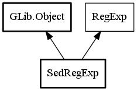

SedRegExp
Object Hierarchy:

Description:
public class SedRegExp :
Object,
RegExp
Static class for generation SED specific regular expressions
Short Description
Used to generate SED specific regular expressions,
escape SED specific special characters
Content:
Static methods:
- public static string replaceDecimalDelimiter (string changeTo)
Generate regular expression to change decimal delimiter
- public static string replaceWords (string change, string changeTo)
Generate regular expression to replace words, simbols in text
- public static string reformatDate (string sourceDF, string sourceDS, string sourceDT, string sourceSep, string resultDF, string resultDS, string resultDT, string resultSep, string prefix = "")
Generate regular expression to reformat date
- private static string genDateSearch (string firstDPart, string secondDPart, string thirdDPart, string separator)
Auxiliary method of
SedRegExp.reformatDate, used to generate search part of regular
expression to reformat date
- private static string genDateSearchPart (string part)
- private static string genDateChange (string sourceDF, string sourceDS, string sourceDT, string resultDF, string resultDS, string resultDT, string dateSep, string prefix)
Auxiliary method of
SedRegExp.reformatDate, used to generate replace part of regular
expression to reformat date
- private static int[] simpleOrder (int[] sourceOrder, int[] resultOrder)
- private static int[] genResultOrder (string resultDF, string resultDS, string resultDT)
- private static int[] genOrder (string firstDatePart, string secondDatePart, string thirdDatePart)
- private static int genOrderPart (string datePart)
- private static int[] changeSize (int[] shortArray, bool hasLongYear)
- private static bool hasLongYear (int[] order)
- private static string escapeString (string inputString)
Escape instrument specific special characters
- private static string changeToComma ()
- private static string changeToDot ()
Creation methods:
Inherited Members:
All known members inherited from class GLib.Object
All known members inherited from interface RegExp